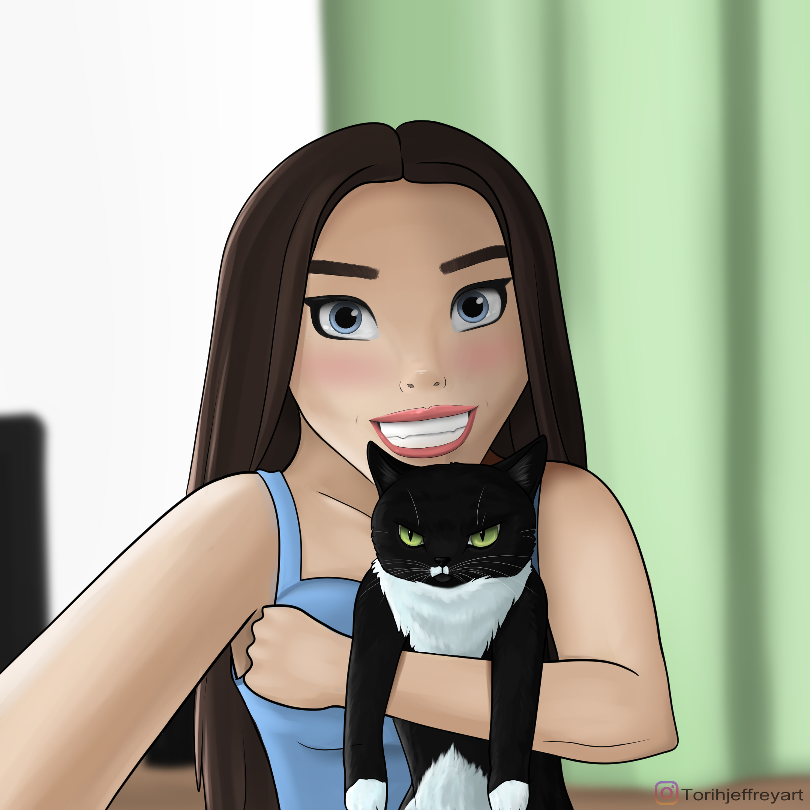

I am a self taught digital artist from Northern Ireland, but currently residing in Liverpool. I mainly specialize in drawing animals, prehistoric life and fantasy creatures. I draw in a range of styles from cartoon, conceptual, realism and photo realism.
